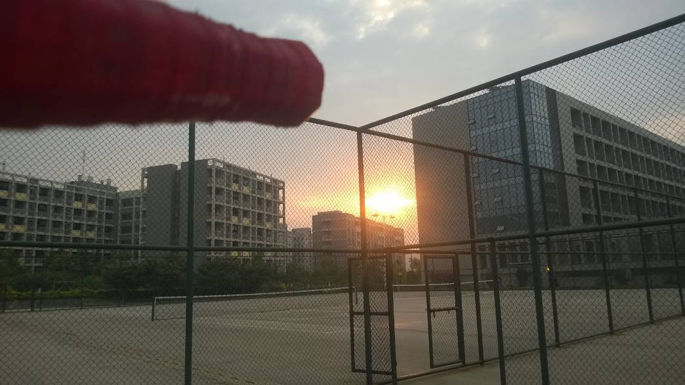

我现在是一名大二的学生，专业就读于管理学院的电子商务。学习电子商务这个专业有半年了，从一开始，我就很喜欢这个专业。可以了解到现在最火的互联网交易：电子商务，有几门课我是非常感兴趣，其中就包括网页设计。除此之外，还有Java数据结构，只是，这门课程是一门偏难的学科，现在的我对这门课掌握的不理想，寒假到了，我把学习Java数据结构列入了我的日常计划里。
关于运动方面，我特别钟爱于网球，在大一第一节体育课上，杨老师给我们示范了一下网球的挥拍动作，整个动作在我脑海里留下了深刻的印象，太酷了。从那天开始，就着迷于这项运动，成了生活中的一部分。
学了一个学期的网球，那时我的球打的很糟糕，发球很菜，当然，也谈不上对打了。在第二学期，也是我第二次选的网球课，因为一次偶然缘故，晨起与六点，我早早地来到了三运动场......其中的故事不细说了，只学到一句话：虽不能做到天天早起，但是贵在坚持，是的，因为坚持了两个月的早起晨练，我的网球水平已经发生了质的飞跃。可以在场上和伙伴们对打练球了。
因为钟爱，所以专于所爱。
Never stopping...